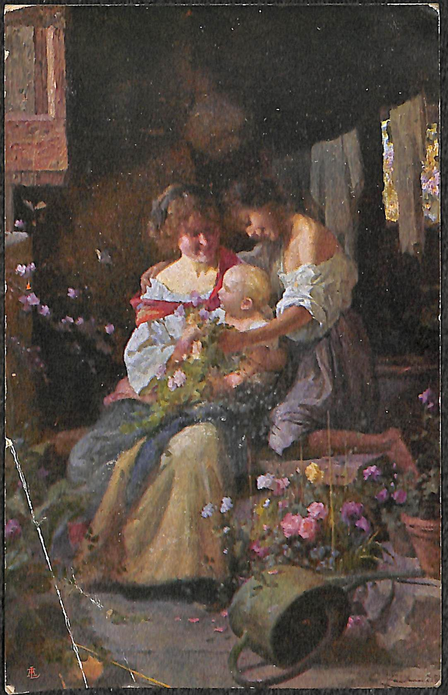

Cartolina 124 619-1
Cartolina da Modena
Fronte

Opera: Primavera in fiore
Descrizione dell'opera: Due donne con un bambino in una stanza cosparsa di fiori primaverili
Retro

124 619-1
Modena
28/07/17
Cordialissimi saluti
Giovannino
Proprietà artistica riservata.
C. Facchinetti- Primavera in fiore.
Firenze, Gall. d'Arte - Palazzo Strozzi.
[stemma]
Gent. (Gentile)
Antonietta TurturaVia Girolamo Roſi(Rossi) 58 Ravenna
Ferrara
(poco chiaro),
francobollo da 5 centesimi del Regno d'Italia
francobollo da 5 centesimi del Regno d'Italia
Definizione: Cartolina
Materiale: Carta
Dimensioni: 9x14cm
Stato di conservazione: Buono
Lingua: Italiano
Codice Identificativo: 7694_124_001/002
Descrizione: Cartolina Artistica
Mittente: Giovanni Coliola (Giovannino)
Destinatario: Antonietta Turtura
Provenienza: Modena (MO)
Destinazione: Castiglione di Ravenna (RV)
Data: 28/07/1917